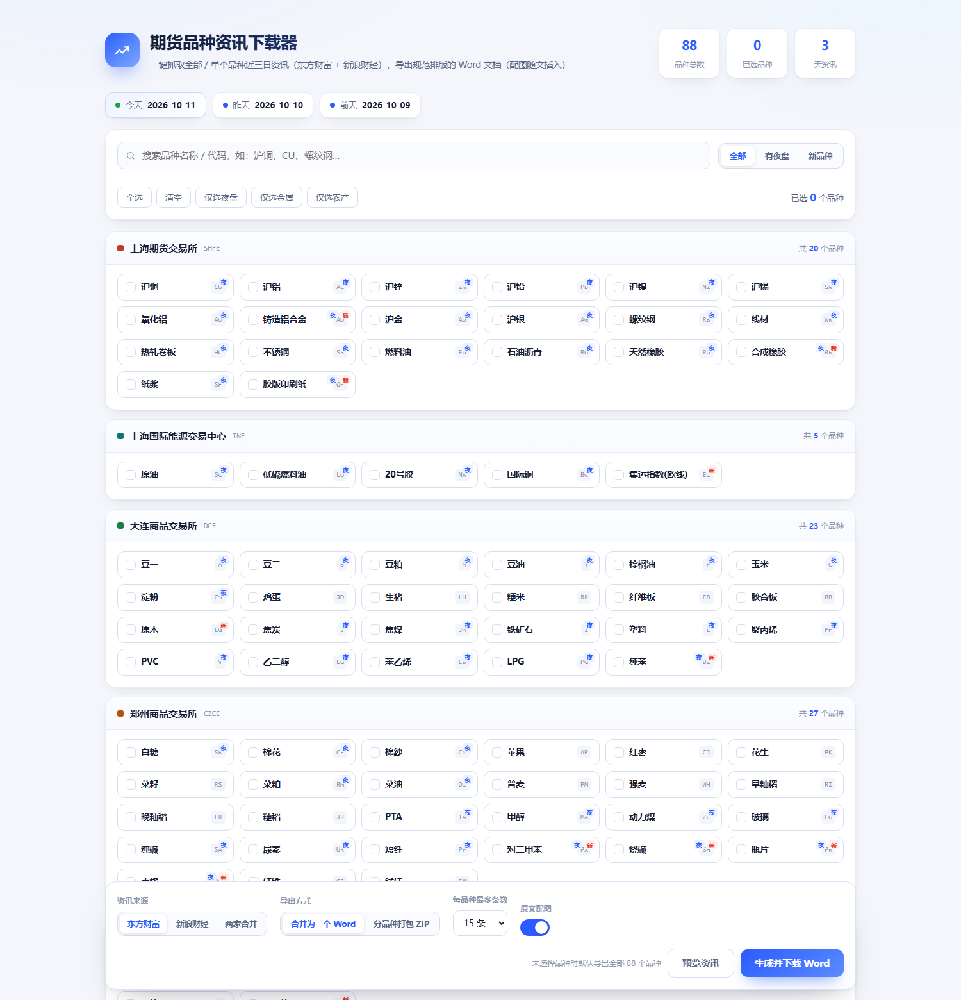

1工具简介
「期货品种资讯下载器」是一个本地运行的网页工具。它在你的电脑上启动一个 小型服务，用浏览器打开界面，帮你把期货品种的近期资讯批量抓下来、 整理成排版规范的 Word 文档。
核心特点
| 能力 | 说明 |
|---|---|
| 批量 / 单个品种 | 支持一键全选 88 个品种，也可只选其中几个；不选任何品种 = 默认全部。 |
| 严格 3 天窗口 | 只保留「今天 / 昨天 / 前天」发布的资讯，按发布时间过滤。 |
| 双数据源 | 东方财富 / 新浪财经 / 两家合并（自动去重）。 |
| 规范 Word | 标题黑体三号加粗居中；正文仿宋三号、两端对齐、首行缩进 2 字符。 |
| 图文原位混排 | 原文配图插入到它原本所在的段落位置，不堆在文末。 |
| 本地运行 | 所有抓取与排版都在本机完成，不上传任何数据。 |
2安装与启动
有两种使用方式，推荐方式一，无需任何编程环境。
方式一：直接运行 exe（推荐）
-
下载 exe
在项目的 Releases 页面下载最新版的
FuturesNewsDownloader.exe（单文件，约 30–40 MB）。 -
放到一个可写目录
建议单独建一个文件夹存放，例如
D:\期货资讯工具\。 程序会在 exe 同级目录下自动创建output\保存结果。 -
双击运行
会出现一个黑色命令行窗口（别关它），随后浏览器自动打开界面。 若没自动打开，手动访问窗口里显示的地址，如
http://127.0.0.1:8899。 -
用完停止
关闭那个黑色命令行窗口即可停止服务。
方式二：源码运行（需要 Python）
适合需要改代码或二次开发的用户。要求 Python 3.8 及以上。
# 1) 进入项目目录
cd futures-news-downloader
# 2) 安装依赖（首次需要）
pip install -r requirements.txt
# 3) 启动服务
python app.py
# 浏览器打开 http://127.0.0.1:8899Windows 用户也可以直接双击项目根目录的 启动.bat，
它会自动装依赖、起服务并打开浏览器。
8899 若被占用，程序会自动切换到
8000 / 9000 / 8800 / 7860 等，实际地址以命令行打印为准。
也可手动指定：set PORT=9000 && python app.py。
3界面导览
界面自上而下分为四个区域，逻辑就是「选品种 → 设参数 → 点生成 → 拿文件」。

| 区域 | 作用 |
|---|---|
| 顶部品牌栏 | 显示工具名称与简介；右侧显示当前「今天 / 昨天 / 前天」的具体日期。 |
| 品种选择区 | 按交易所分组罗列全部品种卡片。顶部有搜索框与快捷按钮（全选 / 清空 / 仅夜盘 / 仅金属 / 仅农产）。 |
| 操作栏（吸底） | 选择资讯来源、导出方式、每品种条数、是否插入配图；右侧是「预览资讯」与「生成并下载 Word」两个按钮。 |
| 结果区 | 显示预览列表，或导出进度条与下载按钮。 |
4操作步骤
4.1 选择品种
- 点击卡片即可选中（再点取消），选中后卡片会高亮。
- 搜索框支持按 名称 / 代码 / 拼音 过滤，例如输入
沪铜、CU、cu都能定位到沪铜。 - 快捷按钮：
全选选全部 88 个；清空取消所有选择；仅夜盘只选有夜盘交易的品种；仅金属、仅农产按大类快速筛选。 - 什么都不选直接生成，等同于「全部品种」。
4.2 选择资讯来源
操作栏的「资讯来源」有三个选项：
| 选项 | 含义 | 适用场景 |
|---|---|---|
| 东方财富 | 只从东方财富检索与抓取。 | 速度快，覆盖主流品种。 |
| 新浪财经 | 只从新浪财经检索与抓取。 | 补充东财未覆盖的稿件。 |
| 两家合并 | 同时检索两个来源，同一篇稿子自动去重。 | 追求最全覆盖（推荐）。 |
4.3 选择导出方式
| 方式 | 产物 | 说明 |
|---|---|---|
| 合并为一个 Word | 单个 .docx |
所有选中品种汇总到一个文档，每个品种独立分页。 |
| 分品种打包 ZIP | 一个 .zip |
每个品种一个 .docx，统一打包。 |
4.4 设置条数与配图
- 每品种条数：限制每个品种最多抓多少条，默认 15。数值越大，抓取时间越长。
- 插入原文配图：勾选后会把文章里的配图下载并嵌入 Word； 取消勾选则只保留文字，生成更快、文件更小。
4.5 预览与生成
-
先预览（可选）
点
预览资讯，快速看看近三天各品种有多少条、标题是什么、 分别来自哪个平台。预览只做检索，不抓正文，很快。 -
生成并下载
点
生成并下载 Word，进度条会实时显示： 检索品种 → 抓取正文 → 生成文档。走完后出现下载按钮。 -
下载 / 打开文件夹
点下载按钮保存文件；或点
打开所在文件夹直接跳到output\目录查看。
5输出文件说明
所有结果都保存在程序目录下的 output\ 里，按任务时间分文件夹。
FuturesNewsDownloader.exe
└── output/
└── 20261011_164140_共2个品种/
├── 期货品种资讯汇编_2026-10-09_2026-10-11.docx ← 合并模式
└── （分品种模式则是一批 .docx + 一个 .zip）| 项目 | 规则 |
|---|---|
| 文件夹名 | 时间戳_品种标签，如 20261011_164140_共2个品种。 |
| 合并文档名 | 期货品种资讯汇编_起始日_结束日.docx（单品种时用品种名）。 |
| 分品种文档名 | 品种名_代码_资讯_起始日_结束日.docx。 |
| 图片 | 不单独输出图片文件夹，全部内嵌进 Word 里。 |
6Word 排版规范
文档严格按下列规范生成（页面 A4，左右页边距 2.5 cm）：
| 元素 | 字体 | 字号 | 其他 |
|---|---|---|---|
| 标题（文档名 / 品种名 / 每条资讯标题） | 黑体 | 三号（16pt） | 加粗、居中 |
| 正文 | 仿宋 | 三号（16pt） | 两端对齐、首行缩进 2 字符 |
| 来源 / 时间 / 原文链接 | 仿宋 | 五号（10.5pt） | 居中、灰色 |
| 图片 | — | — | 按原文位置插入正文、居中、等比缩放、全部展示 |
| 底部署名 | 黑体 | 小四 | 居中 |
文档结构示例
【黑体三号加粗居中】期货品种资讯汇编（2026-10-09 至 2026-10-11）
【仿宋五号居中】资讯来源：东方财富 + 新浪财经 | 品种数：2 | 整理时间：…
───────── 分页 ─────────
【黑体三号加粗居中】沪铜（CU）资讯汇编
【仿宋五号居中】上海期货交易所 · 共 8 条 · 整理时间 …
【黑体三号加粗居中】1. 标题…
【仿宋五号居中】来源：期货日报 时间：2026-10-11 09:20
【仿宋五号居中】原文链接：https://…
【仿宋三号两端对齐首行缩进2字符】正文段落……
【图片 居中 等比缩放】
【仿宋三号】后续段落……
【黑体小四居中】设计：公歧子 微信：gongqizi07常见问题
Q1：双击 exe 后窗口一闪就没了？
通常是端口被占用或依赖缺失。请在命令行里运行 exe（cmd 中拖入 exe 回车），
就能看到具体报错信息。也可尝试先关闭其他占用端口的程序后重试。
Q2：浏览器没自动打开？
手动访问命令行窗口里打印的地址（如 http://127.0.0.1:8899）。
如果连不上，说明服务没起来，检查窗口里的报错。
Q3：某些品种显示「暂无资讯」？
正常现象。冷门品种（如粳米、普麦等）近三天可能确实没有新闻报道， 文档中会明确标注「该品种在所选日期范围内暂无相关资讯」。
Q4：生成速度慢？
抓取需要逐个打开文章页解析正文与配图。品种越多、条数越多越慢。 建议：先减少「每品种条数」，或取消「插入原文配图」，能显著提速。
Q5：导出的 Word 打开后字体不对？
文档里指定的是 黑体 与 仿宋，这两款字体 Windows 默认自带。 如果在 macOS 或其他系统打开，需要自行安装这两款字体，或替换字体后查看。
Q6：图片没有全部出现？
过小的站点图标、广告横幅、二维码等会被自动过滤（小于 200×120 像素）。 另外单篇文章最多保留 12 张配图、若原文图片链接失效也会跳过。 这些都是为了保证文档质量。
Q7：可以抓取其他日期的资讯吗？
默认固定为「今天 / 昨天 / 前天」。如需修改窗口天数，
可在源码中调整 get_date_window(days) 的参数。
Q8：提示网络错误 / 抓不到内容？
多为目标站点临时限流或网络抖动。稍等几分钟重试即可； 也可切换数据源（东财 ↔ 新浪）绕过单站点波动。